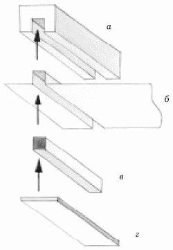
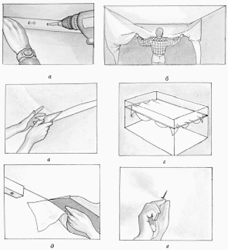

Классификация натяжных потолков.

Натяжные потолки представляют собой прочную декоративную пленку ПВХ без добавления кадмия, толщиной не более 0,17 мм, натягиваемую на специальных каркас (багет) из пластика или алюминия и закрепляемую с помощью специальных замочков.
Натяжные потолки различаются по двум признакам:
– по материалу полотна;
– по способу крепления к основному потолку.
Выпускают натяжные потолки из мягкого поливинилхлорида (ПВХ) без содержания кадмия и полиэфирной ткани, пропитанной полиуретаном. Это потолки почти всех известных фирм, исключая „Clipso“. Ко второй группе относятся потолки фирмы „Clipso“.
По способу крепления натяжные потолки делятся на два больших класса: гарпунные и безгарпунные.
При гарпунном способе по периметру полотна приваривают окантовку из более жесткого ПВХ, имеющую в поперечном сечении форму крючка-гарпуна (отсюда и название).
К классу гарпунных натяжных потолков относятся материалы всех известных фирм – „Barrisol“, „Extenzo“, „Сarre Noir“, „Novelum“, а также новичков на российском рынке строительных материалов – фирм „DPS“, „Decomat“, „Deckenfest“.
Класс безгарпунных потолков, в свою очередь, делится на подклассы:
– потолки клинового крепления;
– потолки кулачкового крепления;
– потолки крепления гибким шнуром.
В первом случае края нагретого и расправленного полотна зажимают на багете распорным профилем примерно так же, как салфетку в пяльцах.
При кулачковом способе поливинилхлоридную пленку закрепляют между двумя полукруглыми поверхностями „кулачков“, входящих в крепежный профиль (рис. 20).

Рис. 20. Устройство потолка кулачкового крепления: а – крепежный профиль; б – полотно; в – фиксирующий клин; г – багет.
„Кулачки“ раздвигаются при проталкивании пленки шпателем, однако при попытке вытянуть пленку назад они автоматически сжимаются. Крепежный профиль позволяет сократить потерю высоты помещения до 8 мм.
Кулачковый способ используют при установке потолочных систем фирм „Prestige“, „Design“ и „Skol“.
Способ крепления гибким шнуром применяют при установке полиэфирных потолков фирмы „Clipso“.
Самые популярные гарпунные потолки изготавливает компания „Barrisol“ начиная с 1976 г. Считается, что по качеству и разнообразию моделей потолкам фирмы „Barrisol“ нет равных. Среди недостатков отмечается только малый выбор фактур. Кроме того, довольно много времени тратится на изготовление полотна необходимого размера и доставку его из Франции: дело в том, что полотна вырезают по точным размерам помещения на заводе-изготовителе.
Самый богатый выбор фактур у продукции фирмы „Newmat“ – примерно 15. Помимо общих для всех производителей матовых, сатиновых и лаковых потолков, полотна фирмы „Newmat“ бывают следующей фактуры:
– матовое стекло;
– бархат;
– фантазии природы;
– рельеф и многие другие.
Также новаторской является и технология „Newgraphic“ – нанесение любого рисунка на матовое полотно натяжного потолка, причем изображение проникает в саму структуру материала. В последние годы расширена коллекция готовых изображений. Известно, что теперь их ровно 125. Интересно, что изображения делают как в виде картин и некоторых декоративных элементов, так и в виде отдельно стоящих фигур по всему полотну потолка.
На натяжные потолки фирмы „Newmat“ дается 10-летняя гарантия качества и цвета изображения.
В начале 2003 г. на рынке строительных материалов появились плетеные натяжные потолки „Battinewline“ французской фирмы „Newmat“. Оригинальный дизайн, изящная декоративность, выносливость к механическим повреждениям и низким температурам, а также воздухопроницаемость сразу же поставили новинку на одно из первых мест.
Эта фирма не так давно выпустила еще один „хит“ – акустические натяжные потолки с матовой фактурой, немного утолщенной, в которой за счет микроперфорации были изменены акустические свойства отражающей поверхности. Дополнительно рекомендуется установить слой стекловолокна под акустическими потолками.
Декоративные и технические характеристики натяжных потолков фирмы „Extenzo“ в последние годы становятся все более и более популярными. Следует знать, что на российском рынке строительных материалов потолки этой фирмы присутствуют с 1994 г., поэтому многие архитекторы и дизайнеры стараются использовать только их.
Среди представленных на рынке стройматериалов полотна натяжных потолков фирмы „Carre Noir“ не так давно стали занимать одно из первых мест. На выбор представлено более 60 цветовых оттенков и 6 структур потолков.
На наш взгляд, натяжные потолки голландской фирмы „Mondea“ более удобны в применении: они могут быть установлены цельным куском без швов, с фиксацией только по периметру потолка.
Подробнее о натяжных потолках фирмы „Mondea“ мы расскажем чуть позже.
Особо хотелось бы отметить потолки французской фирмы „Clipso“, изготовленные из полиэстера со специальной полиуретановой пропиткой, белого цвета, которое в случае необходимости окрашиваются любыми составами для потолков.
Помимо этого, технология монтажа такого потолка довольно проста: не требуется ни специальных приспособлений для нагревания потолка, применяемых при установке других потолочных систем, ни особых умений и навыков.
Устанавливают специальный багет на потолке, если он достаточно ровный, или на стенах, если требуется скрыть некоторые дефекты базового потолка. Затем вместе с помощником разворачивают полотно и натягивают его к углам багета, закрепив защелками-клипсами (рис. 21).

Рис. 21. Установка потолка фирмы „Clipso": а – крепление багета; б – развешивание полотна; в – заправка полотна; г – натяжка; д – обрезка; е – установка осветительных приборов.
Существуют и другие отличия полотна фирмы „Clipso“ от некоторых других потолочных систем:
– бесшовность (ширина до 4,6 м);
– пожаробезопасность;
– морозоустойчивость.